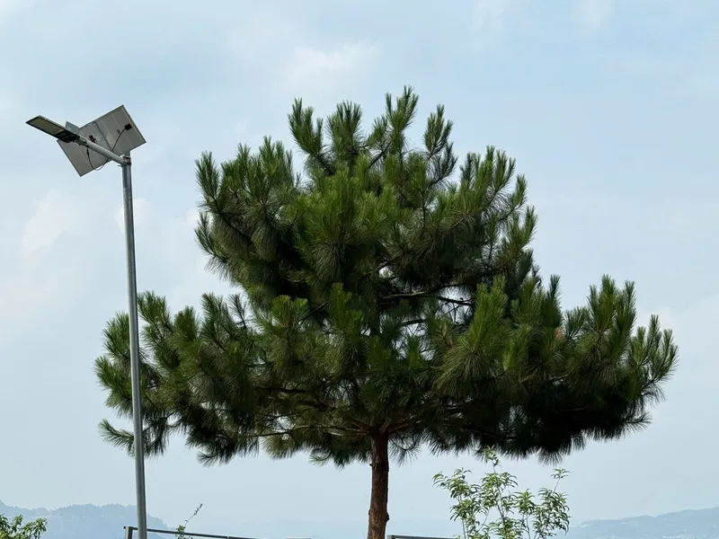

Places
Dong Van, the town the loop is built around
Dong Van (Đồng Văn) is the old market town at the centre of the Ha Giang Loop — most itineraries, mine included, are built around a night or two here. It sits in karst country, ringed by limestone mountains, and it is also the district I was raised in.

What Dong Van actually is
An old quarter of low stone-and-timber houses around a small market square, ringed by karst peaks, close enough to the Chinese border that the whole district feels like the edge of something. It is the town the classic route is built around — most itineraries spend at least one night here, on the way to or from Ma Pi Leng.

The real landmarks nearby
- The H'mong King's Palace (Vuong Family Palace), a short ride away at Sa Phin.
- Lo Lo Chai, a village at the foot of the hill near Lung Cu.
- Lao Xa, where silver is still hammered by hand, and hemp is stripped and indigo-dyed the way it always has been.
The rotating markets around it
Several of the province's "cho lui" markets — the ones that follow the old zodiac-day cycle rather than a fixed weekday — sit in Dong Van district: Pho Bang, Sa Phin, Lung Phin and Ma Le are all within reach. The full market-day guide has the real schedule for each.
Where to actually stay
Three places I actually send guests to, not a booking-site list: Aladin, Bao Minh Hotel, and Windy Hill, all in Dong Van. Real photos and what each one is actually like are on the Local Favourites page.
Where Dong Van falls short
The Old Quarter looks its best in the hour around sunset — which is also when every group on the loop arrives for the same photo of the same tiled roofs. That's the busiest window, not early morning. The night market street off the main square is real, but it's built for tour groups now; one slow walk-through is enough, it isn't the reason to stay two nights. The town itself is better a street or two back from that square, and that's usually where I actually take people.
Next step
See it on the loop
Every one of my trips spends time in Dong Van. Tell me your dates and I will tell you which trip fits.